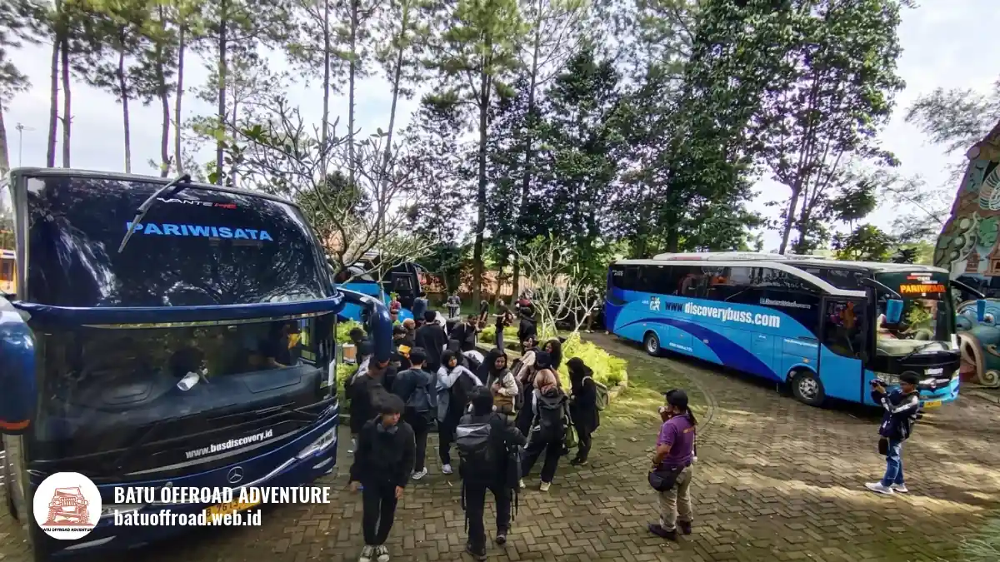

Rute ke Coban Rais dan Jawaban Soal Akses Bus
Rute ke Coban Rais menuju Desa Oro-oro Ombo, Kota Batu, sekitar 15-20 menit dari pusat kota; rombongan bus perlu mengonfirmasi akses kendaraan besar sebelum berangkat.
- Coban Rais berada di Dusun Dresel, Desa Oro-oro Ombo, Kecamatan Batu (Orami, 23 Juli 2024).
- Dari pusat Kota Batu, waktu tempuh sekitar 15-20 menit dengan kendaraan pribadi (Indonesia Travel).
- Dari Kota Malang, jarak sekitar 20 km ke Kota Batu dengan waktu 30-45 menit (Trip.com Batu Travel Guide).
- Akses bus besar bergantung pada ukuran kendaraan dan kondisi jalan, sehingga perlu dikonfirmasi lebih dulu.
- Merencanakan offroad setelah tiba? Kirim tanggal dan jumlah peserta ke WhatsApp Batu Offroad di +62 812-3398-9707 untuk cek jadwal dan ketersediaan.
Bagaimana rute ke Coban Rais dari pusat Kota Batu?
Dari pusat Kota Batu, arahkan kendaraan menuju Desa Oro-oro Ombo, lewati kawasan Batu Night Spectacular, lanjut ke Jalan Dewi Sartika, lalu Jalan Oro-oro Ombo hingga area parkir.
Urutan ini sesuai panduan Indonesia Travel untuk pengguna kendaraan pribadi. Waktu tempuh sekitar 15-20 menit pada kondisi lalu lintas normal. Setelah itu, ikuti papan petunjuk menuju kawasan wisata sampai tiba di area parkir.
Pada akhir pekan dan musim libur, lalu lintas di sekitar kawasan wisata Batu dapat padat. Berangkat lebih pagi membantu rombongan menghindari antrean dan memberi waktu lebih longgar untuk kegiatan. Dari titik ini, rombongan juga dapat menyambung kegiatan petualangan bersama layanan offroad Coban Rais untuk pengalaman seru di lereng Panderman.
Bagaimana rute dari Kota Malang?
Dari Kota Malang, perjalanan ke Kota Batu menempuh sekitar 20 km melalui Jalan Soekarno Hatta dan Jalan Trunojoyo, dengan waktu sekitar 30-45 menit sebelum lanjut ke Oro-oro Ombo.
Angka tersebut berasal dari Trip.com Batu Travel Guide dan dapat bervariasi tergantung jam perjalanan. Setelah memasuki Kota Batu, lanjutkan mengikuti rute dari pusat kota menuju Desa Oro-oro Ombo seperti dijelaskan di bagian sebelumnya.
Bagi wisatawan tanpa kendaraan pribadi, tersedia angkot Malang-Batu dari Terminal Arjosari serta Bus DAMRI. Layanan Trans Jatim Koridor Malang juga berrute sepanjang sekitar 23 km dan berakhir di Terminal Landungsari, gerbang menuju Kota Batu (Metro TV, 8 November 2025).
Bagaimana rute dari Surabaya?
Dari Surabaya, rute umum memakai Tol Surabaya-Malang, keluar di pintu tol Malang, lalu menuju Kota Batu; jaraknya sekitar 85 km dengan waktu 2-3 jam menurut Trip.com.
Waktu perjalanan sangat dipengaruhi kepadatan tol dan jam keberangkatan. Rombongan dari Surabaya sebaiknya berangkat pagi dan menyediakan waktu cadangan, terutama pada akhir pekan.
Untuk perjalanan umum, pilihan yang sering dipakai adalah kereta atau bus ke Malang, kemudian melanjutkan dengan angkot atau kendaraan sewa ke Kota Batu. Biaya dan jadwal dapat berubah, sehingga cek ulang sebelum berangkat.

Bus pariwisata rombongan menuju kawasan wisata Kota Batu
Apakah bus besar bisa langsung masuk ke Coban Rais?
Akses bus besar ke area terdalam kawasan Coban Rais tidak bisa dipastikan untuk semua ukuran kendaraan, sehingga rombongan perlu menanyakan kondisi jalan dan titik turun sebelum berangkat.
Jalan menuju kawasan pegunungan umumnya menyempit, menanjak, dan berkelok. Bus pariwisata ukuran besar kadang kesulitan di ruas tertentu, terutama saat berpapasan. Karena itu, banyak rombongan memilih menurunkan peserta di titik yang aman lalu memindahkan mereka dengan kendaraan yang lebih kecil.
Batu Offroad membantu rombongan berkoordinasi mengenai hal ini. Kirim jenis kendaraan, jumlah peserta, dan jam tiba ke WhatsApp +62 812-3398-9707 agar tim dapat menyarankan titik kumpul yang sesuai. Gambaran lengkap kegiatannya ada di panduan offroad Coban Rais.
Apa tips agar perjalanan ke Coban Rais lancar?
Tips utamanya adalah berangkat pagi, memakai navigasi dengan tujuan yang jelas, menyiapkan uang tunai untuk parkir, dan menunjuk satu koordinator rombongan yang menjadi penghubung.
Beberapa tips tambahan:
- Simpan lokasi tujuan di aplikasi peta sebelum sinyal melemah di area pegunungan.
- Pastikan kendaraan dalam kondisi baik, terutama rem dan ban, karena jalan menanjak.
- Siapkan tarif parkir: motor Rp5.000 dan mobil Rp10.000, dengan catatan tarif dapat berubah (Orami, 23 Juli 2024).
- Pakai alas kaki nyaman karena jalur trekking dari parkir ke air terjun sekitar 20-30 menit (Indonesia Travel).
- Cek prakiraan cuaca, sebab jalur menjadi licin saat hujan.
Panduan persiapan lainnya dapat dilihat di daftar persiapan offroad Batu Malang.
Bagaimana jika naik angkutan umum menuju Coban Rais?
Pengguna angkutan umum dapat menuju Terminal Batu lalu melanjutkan dengan ojek ke pintu masuk kawasan wisata, menurut panduan Indonesia Travel.
Ini opsi paling praktis untuk wisatawan perorangan atau kelompok kecil. Untuk rombongan besar, kendaraan carter biasanya lebih efisien karena seluruh peserta berangkat dan pulang bersamaan. Jadwal dan tarif angkutan dapat berubah, sehingga tanyakan langsung sebelum naik.
Kesimpulan
- Dari pusat Batu, Coban Rais sekitar 15-20 menit ke arah Desa Oro-oro Ombo.
- Dari Malang dan Surabaya, berangkat pagi dan sediakan waktu cadangan.
- Akses bus besar perlu dikonfirmasi lebih dulu.
- Kirim kendaraan, jumlah peserta, dan tanggal ke WhatsApp +62 812-3398-9707.
Ingin melanjutkan perjalanan dengan offroad? Hubungi Batu Offroad di WhatsApp +62 812-3398-9707 untuk cek jadwal dan ketersediaan armada. Lihat juga paket offroad dan fun games untuk pilihan kegiatan rombongan.
Pertanyaan yang Sering Diajukan (FAQ)
-
Berapa lama perjalanan dari pusat Kota Batu ke Coban Rais?
Sekitar 15-20 menit dengan kendaraan pribadi pada kondisi lalu lintas normal, menurut Indonesia Travel. Pada akhir pekan, waktu tempuh dapat lebih lama. -
Apakah mobil keluarga bisa menuju Coban Rais?
Mobil pribadi umumnya dapat menuju area parkir kawasan Coban Rais. Perhatikan kondisi jalan menanjak dan berkelok, serta pastikan kendaraan dalam kondisi prima sebelum berangkat. -
Apakah ada angkutan umum langsung ke Coban Rais?
Pengguna angkutan umum biasanya menuju Terminal Batu lalu melanjutkan dengan ojek ke pintu masuk kawasan. Rute dan tarif dapat berubah, jadi cek informasi terbaru.
Artikel Terkait